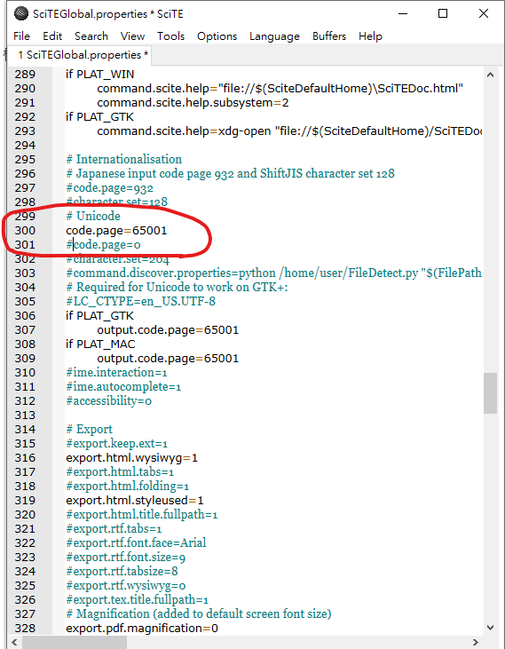
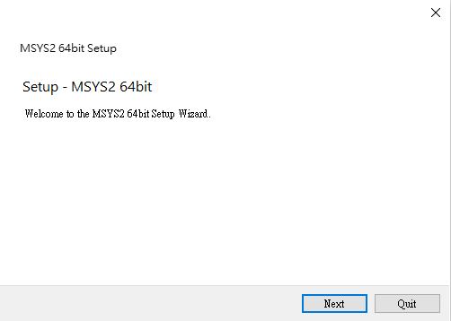
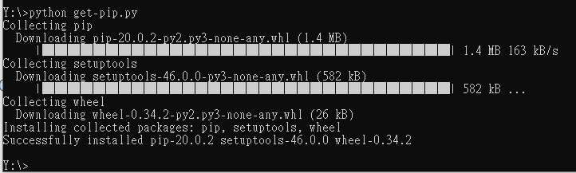
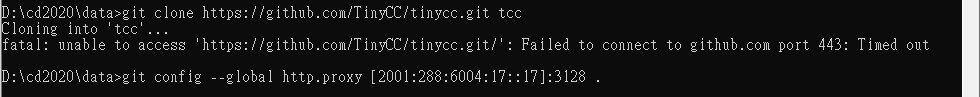

week1 <<
Previous Next >> week3
week2
python 從3.7.3更新至3.8.2版
python:
到https://www.python.org/downloads/release/python-382/下載Windows x86-64 executable installer執行


到剛剛的安裝位置複製pytho 3.8.2(此時我已改名稱為py38)
貼到自己所建的data目錄下

scite:
下載 ” full 64-bit download，載完後解壓縮，再複製到data底下
在執行data\wscite432\wscite底下的SciTE.exe
按照圖文開啟open Global Options File

到300行 更改( code.page=65001 、code.page=0)如圖下所示

139行的#load.on.activate=1 把#刪掉 在存檔，在關閉scite

在data底下建立home


打開scite 複製然後存成start.bat
@echo off
set Disk=y
subst %Disk%: "data"
%Disk%:
set HomePath=%Disk%:\home
set HomeDrive=%Disk%:\home
set Home=%Disk%:\home
set USERPROFILE=%Disk%:\home
REM 將系統 Python 程式的 io 設為 utf-8
set PYTHONIOENCODING="utf-8"
#REM for putty
#Set GIT_HOME=%CDisk%:\portablegit\bin\
#Set GIT_SSH=%Disk%:\putty\plink.exe
set PYTHONPATH=%Disk%:\py382\DLLs;%Disk%:\py382\Lib;%Disk%:\py382\Lib\site-packages;
set PYTHONHOME=%Disk%:\py382
set path_python=%Disk%:\py382;%Disk%:\py382\Scripts;
set path_msys2=%Disk%:\msys64\mingw64\bin;
set path_git=%Disk%:\portablegit\bin;
set path_tcc=%Disk%:\tcc;
path=%Disk%:;%path_python%;%path_msys2%;%path_git%;%path_tcc%;
start /MIN cmd.exe
start /MIN cmd.exe
start /MIN cmd.exe
start /MIN cmd.exe
start /MIN %Disk%:\wscite432\wscite\SciTE.exe
start /MIN %Disk%:\wscite432\wscite\SciTE.exe
Exit
這個存成stop.bat
@echo off
set Disk=y
path=%PATH%;
taskkill /IM python.exe /F
taskkill /IM pythonw.exe /F
taskkill /IM scite.exe /F
REM 終止虛擬硬碟與目錄的對應
subst %Disk%: /D
REM 關閉 cmd 指令視窗
taskkill /IM cmd.exe /F
EXIT
MSYS2：
https://www.msys2.org
下載 msys2-x86_64-20190524.exe 並執行

在data底下建立msys64 並安裝此位置


PortableGit：
https://git-scm.com/download/win下載64-bit Git for Windows Portable安裝在data目錄下


Tiny C Compiler：
https://github.com/TinyCC/tinycc
git clone 整個倉儲到 data 目錄下並命名目錄為 tcc

git config --global http.proxy [2001:288:6004:17::53]:3128
用到相關指令
pip install (flask,bs4,xml,elican, mrkdown,flask_cors,leo)
week1 <<
Previous Next >> week3